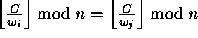
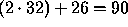

| Perfect Hash |
Perfect Software, Inc. has obtained a government contract to examine text flowing through a high-speed network for the occurrence of certain words. Your boss, Wally Perfect, has designed a parallel processing system which checks each word against a group of small perfect hash tables.
A perfect hash function maps its input directly to a fully occupied table. Your job is to construct the perfect hash functions from the lists of words in each table. The hash function is of the form , where C is a positive integer you are to discover, w is an integer representation of an input word, and n is the length of the table. C must be as small as possible. Note that is the floor function and that for some real number R is the largest integer that is .
Here are Wally's notes on the subject:
Let consist of positive integers . The problem is to find the smallest positive integer C such that
for all .
C must be a multiple of at least one element of W.
If some
 for all ,
then the next largest C that could resolve the conflict is at least
Since all such conflicts must be resolved, it is advantageous to choose the largest candidate from among the conflicts as the next C to test.
You are to convert each word to a number by processing each letter from left to right. Consider `a' to be 1, `b' to be 2, , `z' to be 26. Use 5 bits for each letter (shift left by 5 or multiply by 32). Thus `a' = 1, `bz' =  .
Input to your program will be a series of word lists, one per line, terminated by the end-of-file. Each line consists of between two and thirteen words of at most five lower case letters each, separated from each other by at least one blank. There will always be at least one one-letter word.
For each list, you are to print the input line. On the next line, print the C for the hash function determined by the list. Print a blank line after each C.
C will always fit in a 32-bit integer.
this is a test of some words to try out a bee see dee the of and to a in that is i it with for as
this is a test of some words to try out 17247663 a bee see dee 4427 the of and to a in that is i it with for as 667241